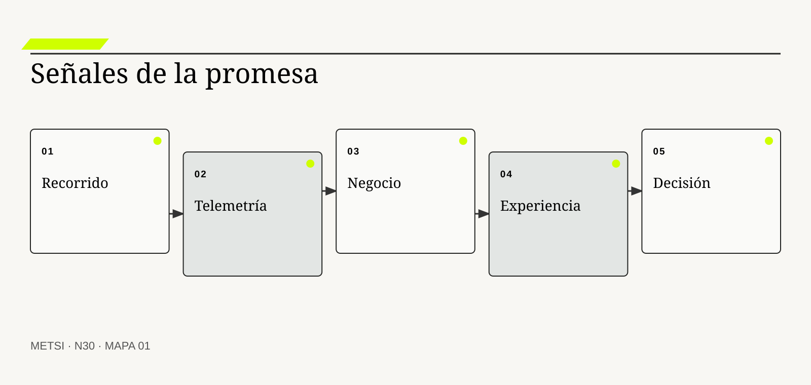
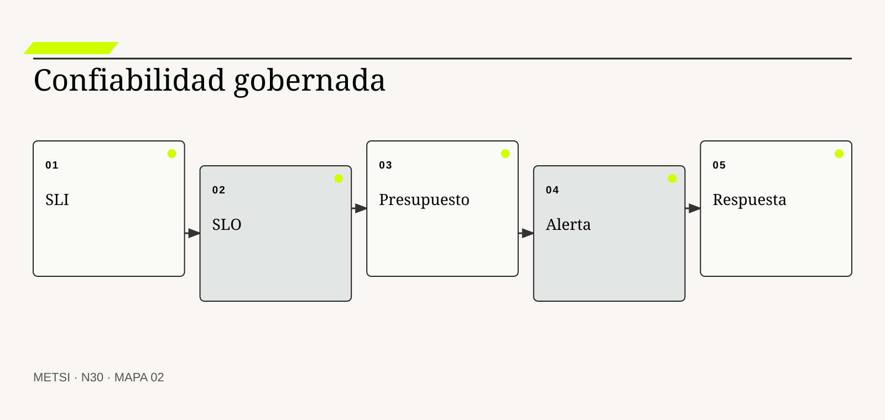
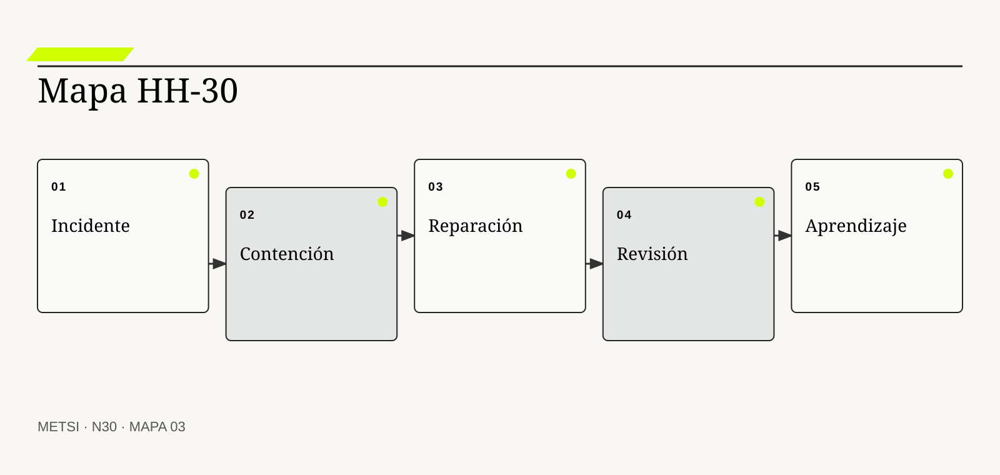

GS
Google SRE
Formaliza SLI, SLO, presupuestos de error y prácticas de confiabilidad.

N30 conecta observabilidad técnica, señales de negocio, SLI, SLO, incidentes y aprendizaje para gobernar la promesa en operación y retroalimentar…
Observabilidad técnica, señales de negocio, SLI, SLO, incidentes y aprendizaje
Ruta de lectura: problema, distinciones, decisiones, prueba, transferencia y preparación.
Nota. SIN NUM. identifica aparatos de orientación y referencia.
Seis voces para ampliar, contrastar y discutir N30.
Formaliza SLI, SLO, presupuestos de error y prácticas de confiabilidad.

Estandariza señales y contexto de telemetría.

Integra respuesta a incidentes con gobierno de riesgo.
Relacionan estabilidad, flujo y desempeño organizacional.

Desarrolla aprendizaje desde el trabajo que sale bien y mal.
Analiza accidentes como resultado de controles y condiciones sistémicas.
N30 no resume estas fuentes ni las convierte en receta. Las pone en tensión para construir juicio profesional.
¿Cómo saber si una promesa sigue en pie, detectar una degradación antes de que se vuelva normal y convertir incidentes en capacidad colectiva?

N30 conecta observabilidad técnica, señales de negocio, SLI, SLO, incidentes y aprendizaje para gobernar la promesa en operación y retroalimentar decisiones anteriores.
Hotel Horizonte completa el despliegue del circuito de ingreso. CPU, memoria, disponibilidad y errores permanecen dentro de rango. Esa noche, varias reservas externas quedan en un estado intermedio y Recepción crea una cola manual. Los tableros están verdes mientras el servicio se degrada.
La infraestructura emitía datos, pero nadie había conectado señales técnicas con la promesa. Tampoco existía un indicador de recorrido, un objetivo explícito ni un aviso que pudiera accionar el turno. La organización observaba componentes y no podía explicar el comportamiento del sistema completo.
Observabilidad es capacidad para formular y responder preguntas sobre estados internos a partir de señales externas. Necesita telemetría coherente, contexto, indicadores de nivel de servicio, objetivos, señales de negocio, experiencia, alertas accionables y conocimiento operativo.
El equipo define el ingreso logrado como evento de negocio y lo relaciona con trazas, métricas y logs. Separa disponibilidad técnica de capacidad efectiva, fija un SLO por recorrido, acuerda presupuesto de error y prepara respuesta ante estados indeterminados.
Cuando ocurre el siguiente incidente, el turno detecta la degradación, limita exposición y conserva evidencia. La revisión posterior reconstruye condiciones y decisiones sin buscar una causa humana única. El aprendizaje modifica arquitectura, contrato, guardia y umbral.
N30 cierra el Bloque F. Recibe una liberación gobernada y completa el circuito con señales, respuesta y aprendizaje. La promesa operativa deja de depender de que alguien note tarde que el sistema ya cambió.
HH-30 construye un mapa de observabilidad para el ingreso. Vincula promesa, recorrido, SLI, SLO, presupuesto de error, señales técnicas, de negocio y de experiencia, alertas, ownership, respuesta y aprendizaje. El tablero deja de informar sólo salud de componentes y permite decidir si ampliar, limitar, reparar o revisar.
N30 conecta observabilidad técnica, señales de negocio, SLI, SLO, incidentes y aprendizaje para gobernar la promesa en operación y retroalimentar decisiones anteriores.
N29 deja evidencia y decisiones abiertas que N30 utiliza sin reabrir su contenido. N30 conecta observabilidad técnica, señales de negocio, SLI, SLO, incidentes y aprendizaje para gobernar la promesa en operación y retroalimentar decisiones anteriores.
N31 abrirá el Bloque G y distinguirá reglas, predicción, generación y agencia para decidir si la inteligencia artificial resulta pertinente. N30 no automatiza todavía el juicio ni selecciona modelos.
Beyer, B., Jones, C., Petoff, J. y Murphy, N. R. conectan confiabilidad, objetivos y operación. En N30, ese aporte pone a prueba decisiones concretas y no funciona como respaldo ornamental. Su alcance se conserva en N30: ninguna referencia sustituye la evidencia del caso ni la autoridad necesaria para intervenir.
Beyer, B., Murphy, N. R., Rensin, D. K., Kawahara, K. y Thorne, S. traducen confiabilidad en prácticas e instrumentos operativos. En N30, ese aporte pone a prueba decisiones concretas y no funciona como respaldo ornamental. Su alcance se conserva en N30: ninguna referencia sustituye la evidencia del caso ni la autoridad necesaria para intervenir.
OpenTelemetry estandariza señales, contexto y procesamiento de telemetría. En N30, ese aporte pone a prueba decisiones concretas y no funciona como respaldo ornamental. Su alcance se conserva en N30: ninguna referencia sustituye la evidencia del caso ni la autoridad necesaria para intervenir.
OpenTelemetry distingue trazas, métricas, logs y contexto para observar sistemas. En N30, ese aporte pone a prueba decisiones concretas y no funciona como respaldo ornamental. Su alcance se conserva en N30: ninguna referencia sustituye la evidencia del caso ni la autoridad necesaria para intervenir.
NIST integra respuesta a incidentes con gobierno de riesgo. En N30, ese aporte pone a prueba decisiones concretas y no funciona como respaldo ornamental. Su alcance se conserva en N30: ninguna referencia sustituye la evidencia del caso ni la autoridad necesaria para intervenir.
NIST incorpora gobierno al manejo de riesgo de ciberseguridad. En N30, ese aporte pone a prueba decisiones concretas y no funciona como respaldo ornamental. Su alcance se conserva en N30: ninguna referencia sustituye la evidencia del caso ni la autoridad necesaria para intervenir.
Forsgren, N., Humble, J. y Kim, G. relacionan desempeño de entrega con estabilidad y aprendizaje. En N30, ese aporte pone a prueba decisiones concretas y no funciona como respaldo ornamental. Su alcance se conserva en N30: ninguna referencia sustituye la evidencia del caso ni la autoridad necesaria para intervenir.
Allspaw, J. examina decisiones y adaptación bajo presión operativa. En N30, ese aporte pone a prueba decisiones concretas y no funciona como respaldo ornamental. Su alcance se conserva en N30: ninguna referencia sustituye la evidencia del caso ni la autoridad necesaria para intervenir.
Hollnagel, E. amplía el aprendizaje desde fallas hacia variabilidad cotidiana. En N30, ese aporte pone a prueba decisiones concretas y no funciona como respaldo ornamental. Su alcance se conserva en N30: ninguna referencia sustituye la evidencia del caso ni la autoridad necesaria para intervenir.
Woods, D. D. define capacidades para responder a sorpresa y cambio. En N30, ese aporte pone a prueba decisiones concretas y no funciona como respaldo ornamental. Su alcance se conserva en N30: ninguna referencia sustituye la evidencia del caso ni la autoridad necesaria para intervenir.
Leveson, N. analiza seguridad mediante controles y condiciones sistémicas. En N30, ese aporte pone a prueba decisiones concretas y no funciona como respaldo ornamental. Su alcance se conserva en N30: ninguna referencia sustituye la evidencia del caso ni la autoridad necesaria para intervenir.
ISO/IEC establece requisitos de gestión para sostener servicios. En N30, ese aporte pone a prueba decisiones concretas y no funciona como respaldo ornamental. Su alcance se conserva en N30: ninguna referencia sustituye la evidencia del caso ni la autoridad necesaria para intervenir.

Observabilidad es la capacidad de comprender estados y comportamientos internos mediante señales externas suficientes y contextualizadas. La definición fija el objeto de decisión. Si el equipo de N30 no puede expresar qué compromiso organiza, la categoría funciona como etiqueta y no como instrumento.
No es sinónimo de monitoreo, acumulación de logs ni compra de una plataforma. La distinción evita que una palabra familiar oculte otro mecanismo. En N30, confundirlos cambia qué se observa, qué se acepta como avance y quién debe intervenir.
En observabilidad, el recorrido causal debe mostrar qué condición habilita la acción, qué transformación ocurre y quién absorbe el resultado. Integra instrumentación, contexto y preguntas nuevas sobre el sistema. Si un salto depende sólo de una explicación oral, la estrategia todavía no puede gobernarlo.
La evidencia relevante para observabilidad no se limita al resultado promedio. La posibilidad de explicar episodios no previstos muestra su calidad. N30 busca además casos negativos, diferencias entre poblaciones y señales de que la explicación elegida podría ser insuficiente.
Ejemplo. Una traza conecta la reserva externa con el estado intermedio y la cola manual. En N30, el episodio vuelve visible la relación entre ritmo, autoridad, evidencia y capacidad de reparación.
El tradeoff central de observabilidad aparece entre anticipar y preservar opciones. Anticipar puede reducir coordinación y también fijar una premisa prematura; preservar opciones puede producir aprendizaje y también demorar una protección necesaria. La elección debe declarar cuál de esos costos acepta, durante cuánto tiempo y para quién.
La auditoría de observabilidad termina con una pregunta de uso: ¿qué podría decidir ahora una persona que antes no podía? En N30, la respuesta debe nombrar una acción, una restricción y una evidencia, no sólo una comprensión mejorada.
Operacionalizar observabilidad requiere asignar una unidad observable. El equipo define qué episodio contará, desde qué momento, con qué población y bajo qué fuente. Después compara al menos un caso ordinario con otro que fuerce excepción. Esta precisión en N30 evita que una conclusión general se sostenga sólo en ejemplos convenientes.
La decisión profesional no termina en adoptar observabilidad. Se compara una ruta principal con una explicación rival, se explicita quién queda expuesto y se conserva un modo de revisar. No todo estado puede inferirse y la instrumentación también falla. El límite forma parte del diseño y no una nota posterior.
Monitoreo compara señales conocidas con condiciones y umbrales previamente definidos. Conviene comenzar por su función profesional. Si el equipo de N30 no puede expresar qué compromiso organiza, la categoría funciona como etiqueta y no como instrumento.
No responde por sí solo preguntas nuevas ni explica causalidad. El contraste importa porque conduce a pruebas distintas. En N30, confundirlos cambia qué se observa, qué se acepta como avance y quién debe intervenir.
El mecanismo de monitoreo no se presume por el nombre. Detecta desviaciones esperadas y activa decisiones operativas. Debe localizarse dónde comienza, qué relaciones activa, qué demora introduce y qué capacidad de reparación queda disponible cuando la expectativa no se cumple.
Una afirmación sobre monitoreo gana fuerza cuando puede reconstruirse desde fuentes independientes. Cobertura, precisión y accionabilidad de alertas permiten evaluarlo. La ausencia de señal también se interpreta: puede significar estabilidad, mala observación o exclusión del caso que más importa.
Ejemplo. Una caída de ingresos logrados por minuto dispara revisión. En N30, el episodio vuelve visible la relación entre ritmo, autoridad, evidencia y capacidad de reparación.
La escala modifica monitoreo. Una solución válida para un equipo puede fallar cuando atraviesa sedes, turnos o proveedores porque aumenta la distancia entre señal y autoridad. Antes de ampliar, N30 prueba si la misma decisión conserva significado y reparación bajo esa nueva distribución.
Para evitar consenso aparente, monitoreo se revisa con alguien afectado y con alguien responsable de reparar. Las dos perspectivas pueden valorar resultados diferentes y obligan a declarar la prioridad elegida.
En la práctica, monitoreo atraviesa más de un área. Se identifican handoffs, esperas, decisiones y datos que cada participante puede ver. Cuando dos áreas usan evidencia distinta en N30, el expediente conserva la divergencia hasta determinar si representa error, perspectiva legítima o una brecha que la estrategia debe resolver.
En una revisión, monitoreo debe responder tres preguntas: qué mejora, qué desplaza y qué vuelve más difícil de revertir. Umbrales estáticos pueden ignorar contexto o producir ruido. Si esas respuestas cambian, también debe cambiar el compromiso, aunque el trabajo previo haya sido técnicamente correcto.
Telemetría reúne trazas, métricas, logs y contexto emitidos por componentes y recorridos. El concepto adquiere valor cuando cambia una decisión. Si el equipo de N30 no puede expresar qué compromiso organiza, la categoría funciona como etiqueta y no como instrumento.
No es evidencia útil sólo por existir en gran volumen. Su vecino conceptual puede parecer equivalente y no lo es. En N30, confundirlos cambia qué se observa, qué se acepta como avance y quién debe intervenir.
Comprender telemetría exige seguir la decisión en el tiempo. Correlación, semántica y procedencia permiten reconstruir actividad distribuida. El análisis distingue condición, intervención, señal temprana y consecuencia para evitar atribuir a una práctica un efecto producido por otro cambio simultáneo.
La prueba de telemetría debe formularse antes de conocer el resultado. Muestreo, completitud y capacidad de enlazar señales determinan utilidad. Se registra qué observación sostendría continuar, cuál obligaría a adaptar y cuál activaría detención o escalamiento.
Ejemplo. El identificador del episodio atraviesa canal, PMS y cerradura. En N30, el episodio vuelve visible la relación entre ritmo, autoridad, evidencia y capacidad de reparación.
El tiempo también altera telemetría. Una evidencia suficiente para explorar puede ser insuficiente para operar de forma permanente. Por eso se separan prueba local, compromiso transitorio y condición estable, y cada estado conserva fecha, alcance y responsable de revisión.
El registro de telemetría conserva una explicación rival. Si esa alternativa predice mejor el episodio siguiente, el equipo cambia de curso sin reescribir retrospectivamente lo que creía saber.
La gobernanza de telemetría incluye quién puede proponer, aprobar, ejecutar, observar y reparar. Esas funciones no se presumen por cargo ni por permiso técnico. N30 las prueba en un escenario donde falta la persona habitual, porque una capacidad que sólo funciona con conocimiento privado todavía no pertenece a la organización.
El juicio sobre telemetría incluye distribución de consecuencias. Más telemetría aumenta costo, exposición de datos y carga cognitiva. Una mejora agregada no alcanza si concentra espera, riesgo o trabajo invisible en un grupo sin autoridad para discutir la decisión.
Una señal de negocio representa una consecuencia operativa o de valor producida por el sistema. La definición fija el objeto de decisión. Si el equipo de N30 no puede expresar qué compromiso organiza, la categoría funciona como etiqueta y no como instrumento.
No se reduce a transacciones técnicas ni a un indicador financiero tardío. La distinción evita que una palabra familiar oculte otro mecanismo. En N30, confundirlos cambia qué se observa, qué se acepta como avance y quién debe intervenir.
La explicación operacional de señal de negocio conecta personas, reglas y tecnología. Vincula eventos del recorrido con poblaciones, decisiones y resultados. Esa conexión permite decidir qué parte puede modificarse localmente y cuál requiere coordinación con otras autoridades o capacidades.
Para auditar señal de negocio, conviene combinar evidencia de diseño, ejecución y consecuencia. Reconciliación con evidencia operativa verifica su significado. Ninguna fuente domina automáticamente; una especificación correcta puede convivir con una operación dañina.
Ejemplo. Ingreso logrado sin reasignación mide mejor la promesa que respuesta HTTP exitosa. En N30, el episodio vuelve visible la relación entre ritmo, autoridad, evidencia y capacidad de reparación.
Existe además una dimensión política en señal de negocio. La opción más eficiente puede reducir la capacidad de una persona para cuestionar una decisión o trasladar trabajo sin reconocerlo. N30 registra esa distribución y no la esconde dentro de un indicador agregado.
Una prueba adversa de señal de negocio introduce demora, ausencia de autoridad o dato incompleto. El objetivo de N30 no es cubrir todas las fallas, sino revelar si la estrategia mantiene una salida segura fuera del camino ordinario.
El indicador de señal de negocio se elige después de formular la decisión. Puede combinar tiempo, calidad, distribución y costo de reparación. Una cifra aislada rara vez explica el mecanismo. En N30, la lectura conjunta de señales evita optimizar velocidad mientras aumenta retrabajo, exclusión o dependencia.
La condición de cierre de señal de negocio no es perfección. La métrica puede incentivar atajos si se separa de salvaguardas. Es evidencia suficiente para el uso previsto, riesgo residual aceptado por autoridad y una ruta clara cuando el supuesto deje de cumplirse.

Un SLI cuantifica una dimensión observable de la experiencia o capacidad que importa a quienes dependen del servicio. Conviene comenzar por su función profesional. Si el equipo de N30 no puede expresar qué compromiso organiza, la categoría funciona como etiqueta y no como instrumento.
No es cualquier métrica disponible ni una cifra elegida por facilidad. El contraste importa porque conduce a pruebas distintas. En N30, confundirlos cambia qué se observa, qué se acepta como avance y quién debe intervenir.
Para que indicador de nivel de servicio sea algo más que una etiqueta, debe existir una cadena examinable. Define eventos válidos, población, ventana y método de cálculo. La cadena incluye supuestos, handoffs y efectos laterales que una descripción ideal suele omitir.
El equipo no declara resuelto indicador de nivel de servicio por acuerdo retórico. Comparación con episodios reales prueba su representatividad. Una persona ajena al diseño debe poder repetir la prueba y comprender por qué el resultado habilita una decisión concreta.
Ejemplo. Proporción de ingresos completados dentro del umbral acordado. En N30, el episodio vuelve visible la relación entre ritmo, autoridad, evidencia y capacidad de reparación.
La mantenibilidad de indicador de nivel de servicio se prueba mediante cambio deliberado. Se modifica una regla, una fuente o una dependencia y se observa quién detecta el impacto, cuánto tarda en responder y qué información necesita. En N30, si la respuesta depende de memoria privada, la capacidad todavía es frágil.
El costo de indicador de nivel de servicio se observa tanto en presupuesto como en atención, espera, coordinación y dependencia. Lo que no figura en una factura puede seguir siendo el costo que define la viabilidad.
La transición asociada con indicador de nivel de servicio necesita un estado intermedio explícito. Durante ese período conviven reglas, versiones o capacidades diferentes. N30 declara cuál rige para cada población, cómo se comunica y qué contingencia protege a quien podría quedar entre ambos sistemas.
El análisis de indicador de nivel de servicio evita dos extremos: conservar por inercia y cambiar por identidad metodológica. Un indicador agregado puede ocultar grupos o momentos críticos. Entre ambos queda una decisión provisional con fecha, responsable y prueba de revisión.
Un SLO establece el nivel esperado de un SLI durante una ventana y orienta decisiones. El concepto adquiere valor cuando cambia una decisión. Si el equipo de N30 no puede expresar qué compromiso organiza, la categoría funciona como etiqueta y no como instrumento.
No es una promesa de perfección ni un SLA contractual automático. Su vecino conceptual puede parecer equivalente y no lo es. En N30, confundirlos cambia qué se observa, qué se acepta como avance y quién debe intervenir.
El valor de objetivo de nivel de servicio aparece al contrastar alternativas. Crea un límite común para equilibrar confiabilidad, cambio y costo. Si dos opciones producen el mismo entregable inmediato, el mecanismo permite compararlas por aprendizaje, dependencia, riesgo residual y posibilidad de salida.
La suficiencia de evidencia para objetivo de nivel de servicio depende del costo de equivocarse. Resultados por ventana y decisiones tomadas muestran si gobierna. A mayor irreversibilidad o desigualdad de daño, mayor contraste, supervisión y autoridad se requieren.
Ejemplo. El recorrido sostiene el umbral para la población definida. En N30, el episodio vuelve visible la relación entre ritmo, autoridad, evidencia y capacidad de reparación.
Finalmente, objetivo de nivel de servicio debe convivir con otras decisiones. Optimizarla de manera aislada puede empeorar flujo, seguridad o comprensión. El expediente N30 explicita dependencias y evita que una mejora local se presente como outcome completo del sistema.
La revisión de objetivo de nivel de servicio fija fecha y desencadenante. Puede ocurrir por incidente, cambio normativo, nueva población o evidencia acumulada. Sin esa regla en N30, una decisión provisional se vuelve permanente por olvido.
El cierre de objetivo de nivel de servicio debe sobrevivir a una revisión independiente. La evidencia, las decisiones y los límites se almacenan de manera que otra persona pueda cuestionarlos. En N30, la trazabilidad no busca eliminar desacuerdo; busca que el desacuerdo se concentre en supuestos examinables y no en recuerdos incompatibles.
La estrategia debe poder explicar por qué objetivo de nivel de servicio recibe cierta inversión y no otra. Un objetivo arbitrario puede normalizar mala experiencia o costo excesivo. Esa explicación conecta valor, costo, aprendizaje y reparación, y permanece abierta a evidencia nueva.
El presupuesto de error expresa la tolerancia restante entre desempeño observado y objetivo acordado. La definición fija el objeto de decisión. Si el equipo de N30 no puede expresar qué compromiso organiza, la categoría funciona como etiqueta y no como instrumento.
No autoriza daño ni convierte toda falla en aceptable. La distinción evita que una palabra familiar oculte otro mecanismo. En N30, confundirlos cambia qué se observa, qué se acepta como avance y quién debe intervenir.
En presupuesto de error, el recorrido causal debe mostrar qué condición habilita la acción, qué transformación ocurre y quién absorbe el resultado. Vincula confiabilidad con ritmo de cambio y medidas de protección. Si un salto depende sólo de una explicación oral, la estrategia todavía no puede gobernarlo.
La evidencia relevante para presupuesto de error no se limita al resultado promedio. Consumo, tendencia y acciones asociadas demuestran su uso. N30 busca además casos negativos, diferencias entre poblaciones y señales de que la explicación elegida podría ser insuficiente.
Ejemplo. Si el presupuesto se agota, se limita exposición y se prioriza recuperación. En N30, el episodio vuelve visible la relación entre ritmo, autoridad, evidencia y capacidad de reparación.
El tradeoff central de presupuesto de error aparece entre anticipar y preservar opciones. Anticipar puede reducir coordinación y también fijar una premisa prematura; preservar opciones puede producir aprendizaje y también demorar una protección necesaria. La elección debe declarar cuál de esos costos acepta, durante cuánto tiempo y para quién.
La auditoría de presupuesto de error termina con una pregunta de uso: ¿qué podría decidir ahora una persona que antes no podía? En N30, la respuesta debe nombrar una acción, una restricción y una evidencia, no sólo una comprensión mejorada.
Operacionalizar presupuesto de error requiere asignar una unidad observable. El equipo define qué episodio contará, desde qué momento, con qué población y bajo qué fuente. Después compara al menos un caso ordinario con otro que fuerce excepción. Esta precisión en N30 evita que una conclusión general se sostenga sólo en ejemplos convenientes.
La decisión profesional no termina en adoptar presupuesto de error. Se compara una ruta principal con una explicación rival, se explicita quién queda expuesto y se conserva un modo de revisar. Derechos y obligaciones críticas pueden exigir tolerancia nula. El límite forma parte del diseño y no una nota posterior.
Una alerta accionable comunica una condición relevante a alguien capaz de intervenir con contexto suficiente. Conviene comenzar por su función profesional. Si el equipo de N30 no puede expresar qué compromiso organiza, la categoría funciona como etiqueta y no como instrumento.
No es cada anomalía ni un mensaje sin prioridad. El contraste importa porque conduce a pruebas distintas. En N30, confundirlos cambia qué se observa, qué se acepta como avance y quién debe intervenir.
El mecanismo de alerta accionable no se presume por el nombre. Relaciona señal, impacto, urgencia, owner y primera acción segura. Debe localizarse dónde comienza, qué relaciones activa, qué demora introduce y qué capacidad de reparación queda disponible cuando la expectativa no se cumple.
Una afirmación sobre alerta accionable gana fuerza cuando puede reconstruirse desde fuentes independientes. Tiempo de reconocimiento, utilidad y falsos positivos permiten mejorarla. La ausencia de señal también se interpreta: puede significar estabilidad, mala observación o exclusión del caso que más importa.
Ejemplo. Recepción recibe una alerta sobre estados indeterminados y activa contingencia. En N30, el episodio vuelve visible la relación entre ritmo, autoridad, evidencia y capacidad de reparación.
La escala modifica alerta accionable. Una solución válida para un equipo puede fallar cuando atraviesa sedes, turnos o proveedores porque aumenta la distancia entre señal y autoridad. Antes de ampliar, N30 prueba si la misma decisión conserva significado y reparación bajo esa nueva distribución.
Para evitar consenso aparente, alerta accionable se revisa con alguien afectado y con alguien responsable de reparar. Las dos perspectivas pueden valorar resultados diferentes y obligan a declarar la prioridad elegida.
En la práctica, alerta accionable atraviesa más de un área. Se identifican handoffs, esperas, decisiones y datos que cada participante puede ver. Cuando dos áreas usan evidencia distinta en N30, el expediente conserva la divergencia hasta determinar si representa error, perspectiva legítima o una brecha que la estrategia debe resolver.
En una revisión, alerta accionable debe responder tres preguntas: qué mejora, qué desplaza y qué vuelve más difícil de revertir. Automatizar avisos sin autoridad produce fatiga y abandono. Si esas respuestas cambian, también debe cambiar el compromiso, aunque el trabajo previo haya sido técnicamente correcto.

Un incidente es una alteración no deseada de la capacidad o promesa que requiere coordinación y aprendizaje. El concepto adquiere valor cuando cambia una decisión. Si el equipo de N30 no puede expresar qué compromiso organiza, la categoría funciona como etiqueta y no como instrumento.
No se define sólo por caída técnica ni por severidad declarada al final. Su vecino conceptual puede parecer equivalente y no lo es. En N30, confundirlos cambia qué se observa, qué se acepta como avance y quién debe intervenir.
Comprender incidente exige seguir la decisión en el tiempo. Organiza detección, contención, comunicación, reparación y recuperación. El análisis distingue condición, intervención, señal temprana y consecuencia para evitar atribuir a una práctica un efecto producido por otro cambio simultáneo.
La prueba de incidente debe formularse antes de conocer el resultado. Línea temporal, decisiones y consecuencias sostienen su reconstrucción. Se registra qué observación sostendría continuar, cuál obligaría a adaptar y cuál activaría detención o escalamiento.
Ejemplo. Reservas válidas no pueden transformarse en ingresos durante un turno. En N30, el episodio vuelve visible la relación entre ritmo, autoridad, evidencia y capacidad de reparación.
El tiempo también altera incidente. Una evidencia suficiente para explorar puede ser insuficiente para operar de forma permanente. Por eso se separan prueba local, compromiso transitorio y condición estable, y cada estado conserva fecha, alcance y responsable de revisión.
El registro de incidente conserva una explicación rival. Si esa alternativa predice mejor el episodio siguiente, el equipo cambia de curso sin reescribir retrospectivamente lo que creía saber.
La gobernanza de incidente incluye quién puede proponer, aprobar, ejecutar, observar y reparar. Esas funciones no se presumen por cargo ni por permiso técnico. N30 las prueba en un escenario donde falta la persona habitual, porque una capacidad que sólo funciona con conocimiento privado todavía no pertenece a la organización.
El juicio sobre incidente incluye distribución de consecuencias. La clasificación inicial cambia con evidencia y no debe impedir respuesta. Una mejora agregada no alcanza si concentra espera, riesgo o trabajo invisible en un grupo sin autoridad para discutir la decisión.
Respuesta coordinada distribuye autoridad y comunicación para limitar daño bajo presión. La definición fija el objeto de decisión. Si el equipo de N30 no puede expresar qué compromiso organiza, la categoría funciona como etiqueta y no como instrumento.
No depende de una persona heroica ni de un runbook inflexible. La distinción evita que una palabra familiar oculte otro mecanismo. En N30, confundirlos cambia qué se observa, qué se acepta como avance y quién debe intervenir.
La explicación operacional de respuesta coordinada conecta personas, reglas y tecnología. Define roles, canales, prioridades, escalamiento y vínculo con poblaciones afectadas. Esa conexión permite decidir qué parte puede modificarse localmente y cuál requiere coordinación con otras autoridades o capacidades.
Para auditar respuesta coordinada, conviene combinar evidencia de diseño, ejecución y consecuencia. Ejercicios y episodios reales muestran si la capacidad existe. Ninguna fuente domina automáticamente; una especificación correcta puede convivir con una operación dañina.
Ejemplo. Tecnología repara estados mientras Operaciones sostiene la atención y comunica. En N30, el episodio vuelve visible la relación entre ritmo, autoridad, evidencia y capacidad de reparación.
Existe además una dimensión política en respuesta coordinada. La opción más eficiente puede reducir la capacidad de una persona para cuestionar una decisión o trasladar trabajo sin reconocerlo. N30 registra esa distribución y no la esconde dentro de un indicador agregado.
Una prueba adversa de respuesta coordinada introduce demora, ausencia de autoridad o dato incompleto. El objetivo de N30 no es cubrir todas las fallas, sino revelar si la estrategia mantiene una salida segura fuera del camino ordinario.
El indicador de respuesta coordinada se elige después de formular la decisión. Puede combinar tiempo, calidad, distribución y costo de reparación. Una cifra aislada rara vez explica el mecanismo. En N30, la lectura conjunta de señales evita optimizar velocidad mientras aumenta retrabajo, exclusión o dependencia.
La condición de cierre de respuesta coordinada no es perfección. La coordinación puede fallar si las responsabilidades cotidianas contradicen el plan. Es evidencia suficiente para el uso previsto, riesgo residual aceptado por autoridad y una ruta clara cuando el supuesto deje de cumplirse.
Una revisión posterior reconstruye condiciones, decisiones y mecanismos para aprender sin reducir el incidente a culpa individual. Conviene comenzar por su función profesional. Si el equipo de N30 no puede expresar qué compromiso organiza, la categoría funciona como etiqueta y no como instrumento.
No es una cronología ornamental ni una búsqueda de causa única. El contraste importa porque conduce a pruebas distintas. En N30, confundirlos cambia qué se observa, qué se acepta como avance y quién debe intervenir.
Para que revisión posterior sea algo más que una etiqueta, debe existir una cadena examinable. Conecta evidencia con cambios verificables en sistema y organización. La cadena incluye supuestos, handoffs y efectos laterales que una descripción ideal suele omitir.
El equipo no declara resuelto revisión posterior por acuerdo retórico. Seguimiento de acciones y recurrencia muestran aprendizaje real. Una persona ajena al diseño debe poder repetir la prueba y comprender por qué el resultado habilita una decisión concreta.
Ejemplo. La revisión modifica contrato temporal, alerta y modo degradado. En N30, el episodio vuelve visible la relación entre ritmo, autoridad, evidencia y capacidad de reparación.
La mantenibilidad de revisión posterior se prueba mediante cambio deliberado. Se modifica una regla, una fuente o una dependencia y se observa quién detecta el impacto, cuánto tarda en responder y qué información necesita. En N30, si la respuesta depende de memoria privada, la capacidad todavía es frágil.
El costo de revisión posterior se observa tanto en presupuesto como en atención, espera, coordinación y dependencia. Lo que no figura en una factura puede seguir siendo el costo que define la viabilidad.
La transición asociada con revisión posterior necesita un estado intermedio explícito. Durante ese período conviven reglas, versiones o capacidades diferentes. N30 declara cuál rige para cada población, cómo se comunica y qué contingencia protege a quien podría quedar entre ambos sistemas.
El análisis de revisión posterior evita dos extremos: conservar por inercia y cambiar por identidad metodológica. Ausencia de castigo no significa ausencia de responsabilidad o reparación. Entre ambos queda una decisión provisional con fecha, responsable y prueba de revisión.
Un bucle de aprendizaje operativo devuelve evidencia de uso e incidentes a arquitectura, contratos, calidad y gobierno de liberación. El concepto adquiere valor cuando cambia una decisión. Si el equipo de N30 no puede expresar qué compromiso organiza, la categoría funciona como etiqueta y no como instrumento.
No es una retrospectiva aislada ni una lista infinita de acciones. Su vecino conceptual puede parecer equivalente y no lo es. En N30, confundirlos cambia qué se observa, qué se acepta como avance y quién debe intervenir.
El valor de bucle de aprendizaje operativo aparece al contrastar alternativas. Prioriza cambios por mecanismo, riesgo y capacidad de prevenir o contener. Si dos opciones producen el mismo entregable inmediato, el mecanismo permite compararlas por aprendizaje, dependencia, riesgo residual y posibilidad de salida.
La suficiencia de evidencia para bucle de aprendizaje operativo depende del costo de equivocarse. Decisiones cerradas, hipótesis revisadas y reducción de recurrencia sostienen el bucle. A mayor irreversibilidad o desigualdad de daño, mayor contraste, supervisión y autoridad se requieren.
Ejemplo. HH-30 actualiza HH-26 a HH-29 con evidencia del turno. En N30, el episodio vuelve visible la relación entre ritmo, autoridad, evidencia y capacidad de reparación.
Finalmente, bucle de aprendizaje operativo debe convivir con otras decisiones. Optimizarla de manera aislada puede empeorar flujo, seguridad o comprensión. El expediente N30 explicita dependencias y evita que una mejora local se presente como outcome completo del sistema.
La revisión de bucle de aprendizaje operativo fija fecha y desencadenante. Puede ocurrir por incidente, cambio normativo, nueva población o evidencia acumulada. Sin esa regla en N30, una decisión provisional se vuelve permanente por olvido.
El cierre de bucle de aprendizaje operativo debe sobrevivir a una revisión independiente. La evidencia, las decisiones y los límites se almacenan de manera que otra persona pueda cuestionarlos. En N30, la trazabilidad no busca eliminar desacuerdo; busca que el desacuerdo se concentre en supuestos examinables y no en recuerdos incompatibles.
La estrategia debe poder explicar por qué bucle de aprendizaje operativo recibe cierta inversión y no otra. Aprender localmente no corrige incentivos o dependencias estructurales sin autoridad. Esa explicación conecta valor, costo, aprendizaje y reparación, y permanece abierta a evidencia nueva.
El instrumento organiza una decisión concreta y no una descripción total. Cada campo debe completarse con evidencia disponible, incertidumbre explícita y autoridad identificada. Si un campo todavía no puede responderse, se registra como asunto abierto y no se completa por inferencia.
El expediente se prueba con un escenario ordinario y uno adverso. Una persona que no participó en su construcción debe poder reconstruir qué se decidió, por qué, qué permanece incierto y cuál es la próxima puerta. El cierre no exige certeza total; exige incertidumbre gobernada y una salida practicable.
Una plataforma pública mantiene infraestructura disponible, pero una validación externa deja solicitudes en espera sin explicación. El tablero técnico no refleja la pérdida de capacidad ciudadana.
El mapa incorpora recorrido, señal de negocio, población, SLO, comunicación y contingencia. La revisión posterior modifica el acuerdo con el tercero y la vía presencial.
HH-30 permite observar la prestación y no sólo la plataforma.
Una organización agrega paneles para cada componente y declara resuelta la observabilidad.
Las señales no comparten contexto, no representan la promesa y ninguna alerta indica una acción. El volumen crece y la incertidumbre permanece.
Observar significa poder formular una pregunta relevante y convertir la respuesta en decisión.
La prueba integral de observabilidad técnica, señales de negocio, sli, slo, incidentes y aprendizaje toma una decisión real y la recorre desde su origen hasta una consecuencia observable. Utiliza promesa y recorrido, población, sli, slo para evitar que el análisis quede dividido en artefactos independientes. Cada afirmación debe encontrar una fuente, una autoridad y una condición de revisión. Cuando dos registros no coinciden, la diferencia se conserva como hallazgo hasta explicar su mecanismo.
El escenario ordinario verifica que n30 conecta observabilidad técnica, señales de negocio, sli, slo, incidentes y aprendizaje para gobernar la promesa en operación y retroalimentar decisiones anteriores. El escenario adverso modifica una dependencia, introduce demora y deja ausente a la persona que suele resolver. El equipo observa si la estrategia detecta el cambio, limita el daño, comunica incertidumbre y activa reparación sin recurrir a conocimiento privado.
La comparación incluye una alternativa descartada. Se documenta por qué no fue elegida, qué supuesto la volvería preferible y qué costo tendría recuperarla. Este ejercicio protege opciones futuras y evita presentar la decisión actual como única solución técnicamente posible. También vuelve discutibles los costos hundidos cuando aparece evidencia nueva.
La prueba concluye con una defensa breve ante una audiencia ajena al equipo. Esa audiencia debe poder reconstruir el problema, objetar la evidencia y comprender por qué la salida propuesta es proporcional. Si sólo puede repetir la recomendación, el expediente todavía no sostiene una decisión profesional. Si puede reconocer límites y actuar ante una excepción, existe capacidad transferible.
Confundir observabilidad con tableros simplifica una decisión que depende de propósito, evidencia y consecuencia. La velocidad inicial se paga cuando operación descubre el supuesto omitido. La corrección vuelve al episodio, identifica quién absorbe el costo y define una prueba antes de continuar.
Medir sólo componentes parece reducir coordinación, pero confunde acuerdo con conocimiento suficiente. El equipo debe comparar una explicación rival, localizar autoridad y registrar qué señal cambiaría el curso elegido.
Elegir SLI por disponibilidad desplaza incertidumbre hacia personas que no participaron de la elección. Corregirlo exige reconstruir el mecanismo, hacer visible el trabajo añadido y establecer una condición de salida proporcional al daño posible.
Fijar SLO sin consecuencia convierte una práctica en fin. La revisión pregunta qué función debía cumplir, qué evidencia produjo y por qué sigue siendo necesaria. Si la función desapareció, la práctica se adapta o se retira.
Usar presupuesto para tolerar daño oculta una frontera. El artefacto puede cerrar y la capacidad seguir incompleta. Un escenario adverso permite observar handoffs, excepciones y reparación antes de ampliar compromiso.
Alertar sin owner confunde cumplimiento formal con decisión defendible. Se necesita conectar fuente, interpretación, implementación y efecto, incluyendo la autoridad que acepta el riesgo residual.
Depender de héroes suele premiar lo visible y dejar fuera mantenimiento, soporte y aprendizaje. La corrección compara el ciclo completo, documenta dependencia y ensaya una salida real.
Buscar una causa única reduce diversidad de casos a un promedio conveniente. Se revisan poblaciones, extremos y daños asimétricos para evitar que una mejora global silencie una pérdida crítica.
Cerrar acciones sin verificar borra memoria y vuelve inexplicable el cambio de rumbo. Una baseline y un registro breve permiten conservar razones sin inmovilizar la estrategia.
Aprender sin devolver evidencia deja responsabilidad sin capacidad. El diseño debe unir permiso, recursos, evidencia y posibilidad de reparar; nombrar un dueño no crea por sí mismo una función operativa.
N30 conecta observabilidad técnica, señales de negocio, SLI, SLO, incidentes y aprendizaje para gobernar la promesa en operación y retroalimentar decisiones anteriores. El avance profesional consiste en sostener una promesa bajo condiciones reales, con autoridad, evidencia y reparación, no en declarar que la solución quedó disponible.

Ninguna arquitectura, contrato, prueba, control ni tablero elimina el juicio situado.
Ninguna arquitectura, contrato, prueba, control ni tablero elimina el juicio situado. Las dependencias cambian, la evidencia llega con demora, la operación distribuye poder y una mejora local puede desplazar daño. El expediente debe conservar población afectada, supuestos, autoridad, degradación aceptable, reparación y fecha de revisión.
N31 abrirá el Bloque G y distinguirá reglas, predicción, generación y agencia para decidir si la inteligencia artificial resulta pertinente. N30 no automatiza todavía el juicio ni selecciona modelos.
N30 conecta observabilidad técnica, señales de negocio, SLI, SLO, incidentes y aprendizaje para gobernar la promesa en operación y retroalimentar decisiones anteriores.
El bloque no propone reemplazar una doctrina por otra. Propone hacer visibles las decisiones que cada práctica organiza, la evidencia que necesita y los daños que puede producir. El resultado es una intervención que puede explicarse, probarse y revisarse.
Observabilidad: observabilidad es la capacidad de comprender estados y comportamientos internos mediante señales externas suficientes y contextualizadas.
Monitoreo: monitoreo compara señales conocidas con condiciones y umbrales previamente definidos.
Telemetría: telemetría reúne trazas, métricas, logs y contexto emitidos por componentes y recorridos.
Señal de negocio: una señal de negocio representa una consecuencia operativa o de valor producida por el sistema.
Indicador de nivel de servicio: un SLI cuantifica una dimensión observable de la experiencia o capacidad que importa a quienes dependen del servicio.
Objetivo de nivel de servicio: un SLO establece el nivel esperado de un SLI durante una ventana y orienta decisiones.
Presupuesto de error: el presupuesto de error expresa la tolerancia restante entre desempeño observado y objetivo acordado.
Alerta accionable: una alerta accionable comunica una condición relevante a alguien capaz de intervenir con contexto suficiente.
Incidente: un incidente es una alteración no deseada de la capacidad o promesa que requiere coordinación y aprendizaje.
Respuesta coordinada: respuesta coordinada distribuye autoridad y comunicación para limitar daño bajo presión.
Revisión posterior: una revisión posterior reconstruye condiciones, decisiones y mecanismos para aprender sin reducir el incidente a culpa individual.
Bucle de aprendizaje operativo: un bucle de aprendizaje operativo devuelve evidencia de uso e incidentes a arquitectura, contratos, calidad y gobierno de liberación.
Para el encuentro, seleccionar una intervención conocida, completar el instrumento con evidencia verificable y preparar una decisión provisional. Incluir una explicación rival, una condición que obligaría a revisar y una consecuencia para una persona afectada.